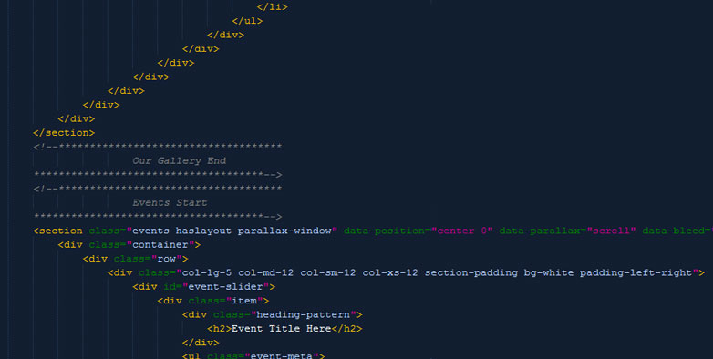
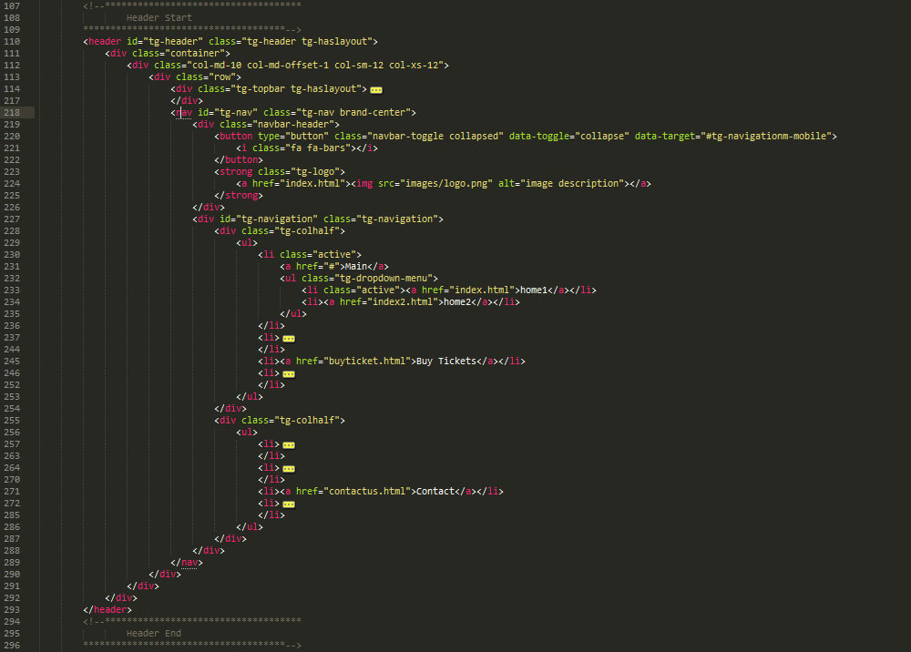
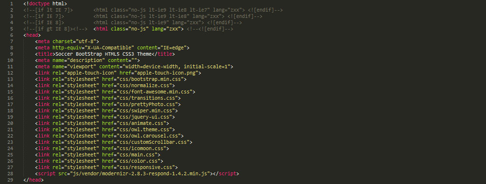
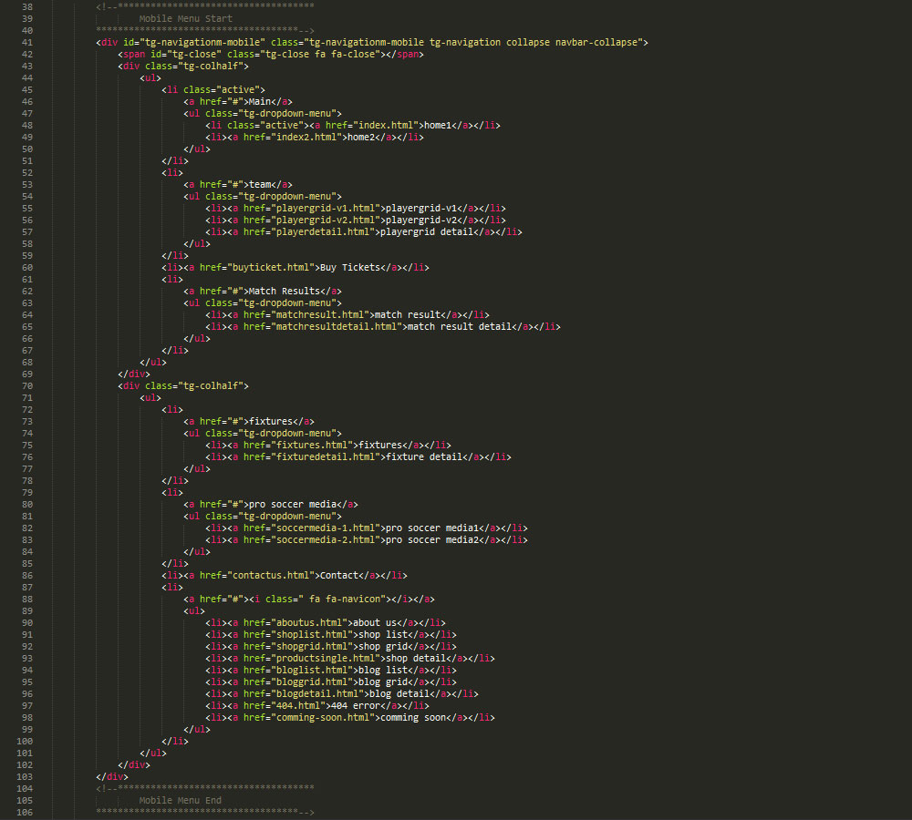
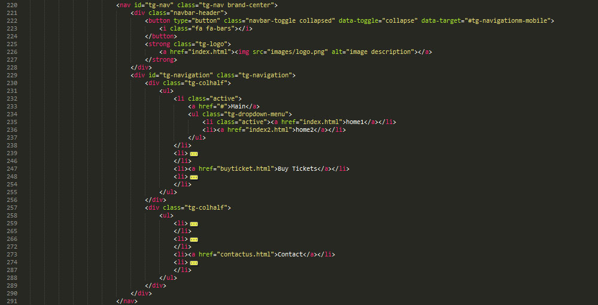
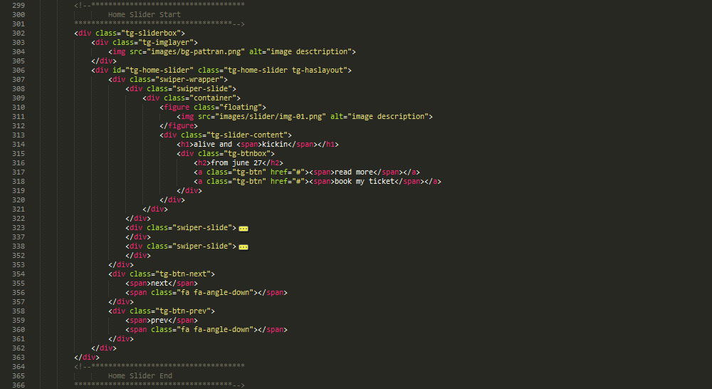
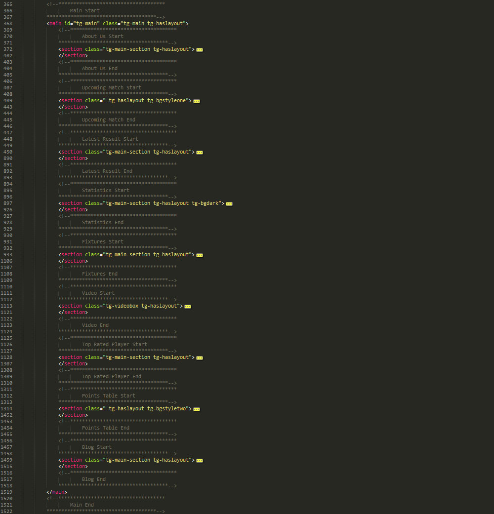
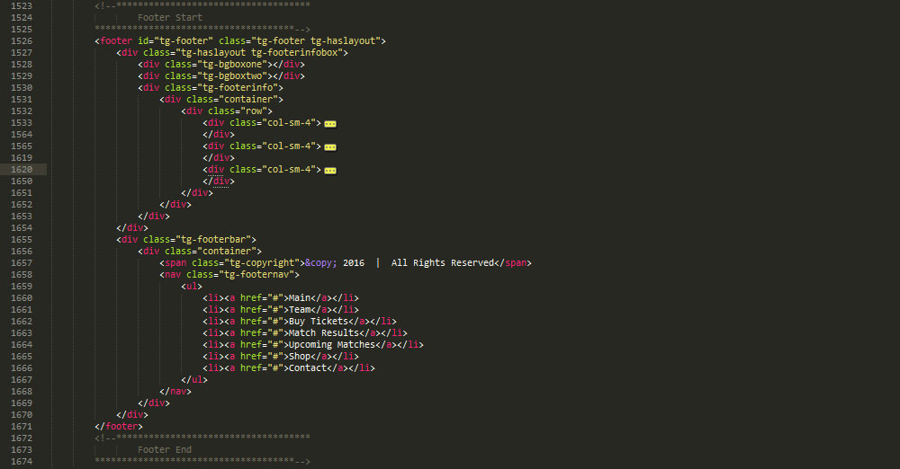
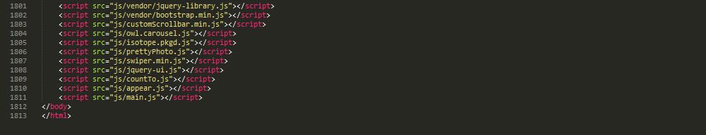

Thank you for purchasing my theme. If you have any questions that are beyond the scope of this help file, please feel free to contact at theexprostudio@gmail.com. Thanks so much!
This theme is a Responsive layout with two columns. All of the information within the main content area is nested within a tag "main" on all pages. The sidebar's content is within a tag "aside" in the Blog pages. The general template structure is the same throughout the template. Here is the general structure.

Header
jpg">Header Files
jpg">Mobile Nav
jpg">Navigation
jpg">Slider
Main
Footer
Footer Files
If you would like to edit the color, font, or style of any elements, You may change in color.css in CSS folder
Theme has following file and folder structure
RTL Supported Theme.
I have CSS files in the CSS folder in template. The main.css is a file in which you can find main CSS so you may change in main.css. Many browser interpret the default behavior of html elements differently. General section file also contains some general styling, such as anchor tag colors, font-sizes, etc. Keep in mind, that these values might be overridden somewhere else in the file.
The main.css file contains all of the specific stylings for the page. The file is separated into sections using:
/* === Header Section === */
some code
/* === Main Section === */
some code
/* === Sidebar Section === */
some code
/* === Footer === */
some codeetc, etc.
If you would like to edit a specific section of the site, simply find the appropriate label in the CSS file, and then scroll down until you find the appropriate style that needs to be edited.
Any images that are placed within the Blog section have 5px worth of padding and a light bluish background. If you would like to edit the display of these images, find the following section in the style sheet:
#main #blog img {
change styles here:
}
There are special CSS file color.css It will be used according to requirements.
Color property is used to color of relevant section.
This theme imports multiple Javascript files on different pages every page have some different JS to avoid conflict and load. List of JS are as under
For Home Page
/* -------------------------------------
JQuery Custom Form Function
-------------------------------------- */
$(function() {
jcf.replaceAll();
});
$(document).ready(function() {
var clicked = 0;
$('#map-button').click(function(){
if(clicked === 0){
$('.contact-info-map').animate({height:'630'})
clicked = 1;
$('.fa-angle-down').removeClass('fa-angle-down').addClass('fa-angle-up');
}
else {
$('.contact-info-map').animate({height:'315'})
clicked = 0;
$('.fa-angle-up').removeClass('fa-angle-up').addClass('fa-angle-down');
}
})
All other JS Files
I've used the following images, icons or other files as listed.
Images from Shutter Stock so need to buy directly from shutterstock. Some are from pixabay
Following are JS files by third Party
Once again, thank you so much for purchasing this theme. As I said at the beginning, I'd be glad to help you if you have any questions relating to this theme. Please feel free to contact us.